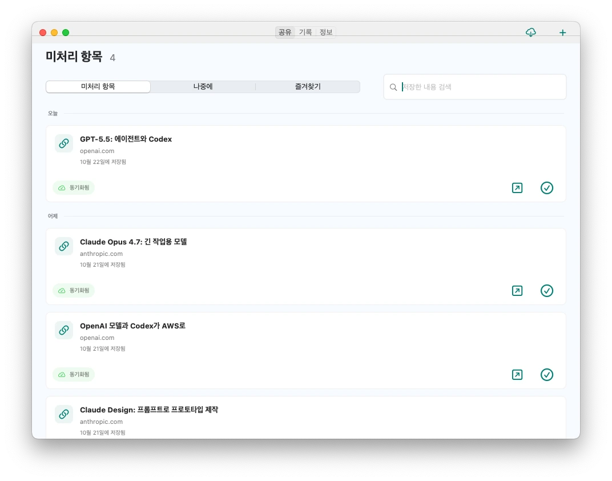
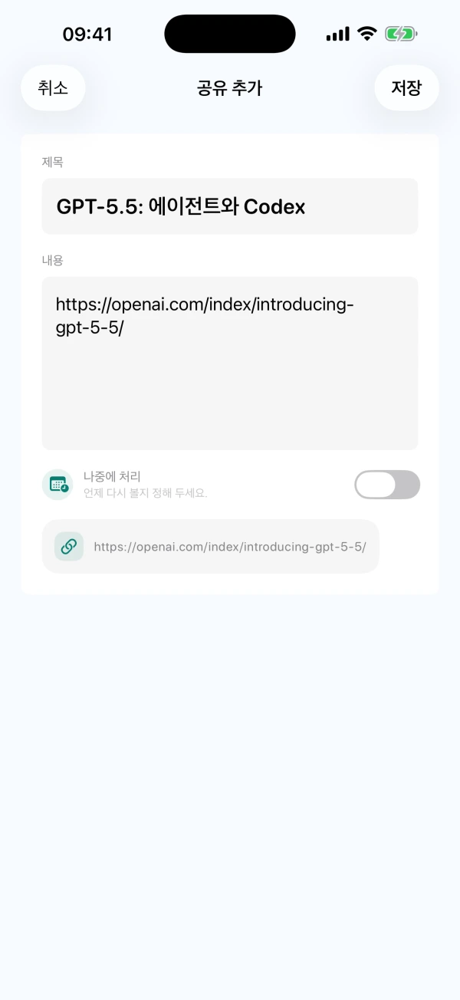
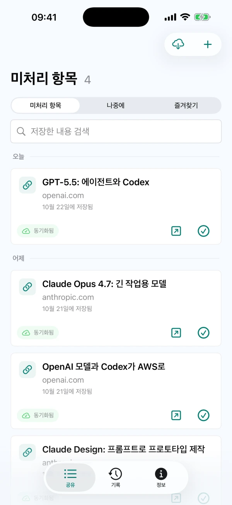

공유하거나 직접 기록
지원하는 앱의 시스템 공유 메뉴에서 텍스트, 링크 또는 이미지를 저장하세요. CarryOver에서 아이디어를 직접 기록할 수도 있습니다.
휴대폰 공유 메뉴에서 저장하고, Mac에서 원문을 열어 이어서 처리하세요.
현재 기능을 사용하려면 App Store에서 받으세요. Mac 직접 다운로드 DMG는 아직 이번 버전으로 업데이트되지 않았습니다.


iPhoneiPadMac
링크, 게시물, 아이디어를 CarryOver로
미완료 항목은 계속 목록에 남아요

출처를 열고 확인한 뒤 완료하세요
지원하는 앱의 시스템 공유 메뉴에서 텍스트, 링크 또는 이미지를 저장하세요. CarryOver에서 아이디어를 직접 기록할 수도 있습니다.
미완료 항목은 저장한 지 오래되어도 목록에 남습니다. 실제로 처리한 뒤 완료로 표시하세요.
Mac 기본 창에서 제목, 본문과 출처 URL을 검색하세요. 미완료 목록과 기록 모두 검색할 수 있습니다.
완료한 항목은 기록으로 이동합니다. 다시 처리하려면 미완료 목록으로 복원하세요.
날짜와 시간을 정하고 시스템 알림을 허용하세요. 알림을 누르면 저장한 항목이 열립니다.
같은 Apple 계정으로 로그인한 iPhone, iPad와 Mac 사이에서 iCloud로 동기화합니다. 네트워크와 iCloud 상태에 따라 지연될 수 있습니다.
무료 버전은 하루 최대 세 번 저장할 수 있습니다. Pro를 한 번 구매하면 일일 저장 제한이 해제됩니다. 지역별 가격은 App Store에서 확인하세요. 도움말 보기